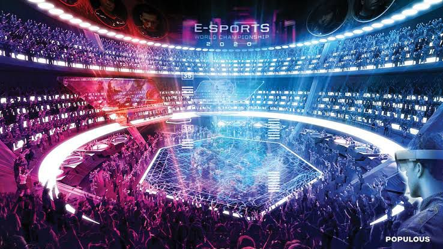

Esport Indonesia |
||||
|---|---|---|---|---|
| Home | Sejarah | Kriteria | Galeri Esport | Pendaftaran Tim |
|
Olahraga elektronik (bahasa Inggris: electronic sports, e-sports, esports) merupakan suatu istilah untuk kompetisi permainan video pemain jamak, umumnya antara para pemain profesional. Aliran permainan video yang biasanya dihubungkan dengan olahraga elektronik adalah aliran strategi waktu-nyata, perkelahian, tembak-menembak orang-pertama, dan arena pertarungan daring multipemain. Turnamen seperti The International Dota 2 Championships, League of Legends World Championship, Battle.net World Championship Series, Evolution Championship Series, Intel Extreme Masters, menampilkan siaran langsung serta hadiah tunai pada para pemainnya. Meski kompetisi teroganisasi telah lama menjadi bagian dari budaya permainan video, kompetisi ini telah mengalami peningkatan besar dalam popularitas dari akhir dekade 2000-an dan awal 2010-an. Jika kompetisi di dekade 2000-an kebanyakan diikuti oleh para pemain amatir, pengadaan kompetisi profesional dan meningkatnya pemirsa saat ini mendukung munculnya banyak pemain dan tim profesional secara signifikan, dan banyak pengembang permainan video saat ini membangun permainan dengan corak untuk memfasilitasi kompetisi tersebut.[3] Para penonton bisa menyaksikan secara langsung pertandingan olahraga elektronik, juga bisa diakses melalui Twitch dan Youtube Gaming. Selain menonton pertandingan, disajikan pula analisis pra dan pascabermain. |
||||
|
Dina Nadifa | 231011700109 |
||||